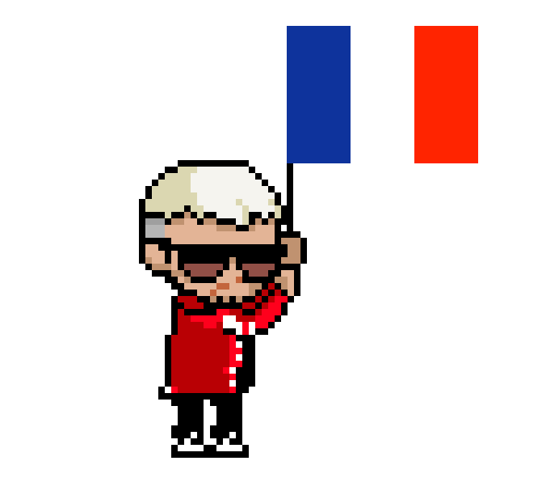

Culture & Arts

French Flag
It has its roots in the 18th century and is regarded as a symbol of liberty and unity for France.
LANGUAGE
French is the official language and the first language of 88% of the population, according to the BBC. It is the dominant language of France, but there are a number of variants based on region.
RELIGION
Catholicism is the predominant religion of France. In a survey by the French Institute of Public Opinion (IFOP), 64% of the population (about 41.6 million people) identified themselves as Roman Catholic.
FRENCH ART
Art is everywhere in France — particularly in Paris and other major cities — and Gothic, Romanesque Rococo and Neoclassic influences can be seen in many churches and other public buildings.
CULTURAL
French culture was historically shaped by Celtic, Roman, and Germanic cultures. As these influences evolved, France became a patchwork of local communities and customs. What’s true for one community may not be true for another. Despite the growing global culture today, France has made an effort to preserve the cultures of its smaller communities.
BOURREE
Bourrée is the name for a French dance along with the music and the words going with it. There was a resemblance between Bourrée and Gavotte, though it was visibly quicker.
SKIING
France has an extensive number of ski resorts in the French alps such as Tignes. Ski resorts are also located in the Pyrénées and Vosges mountain chains.